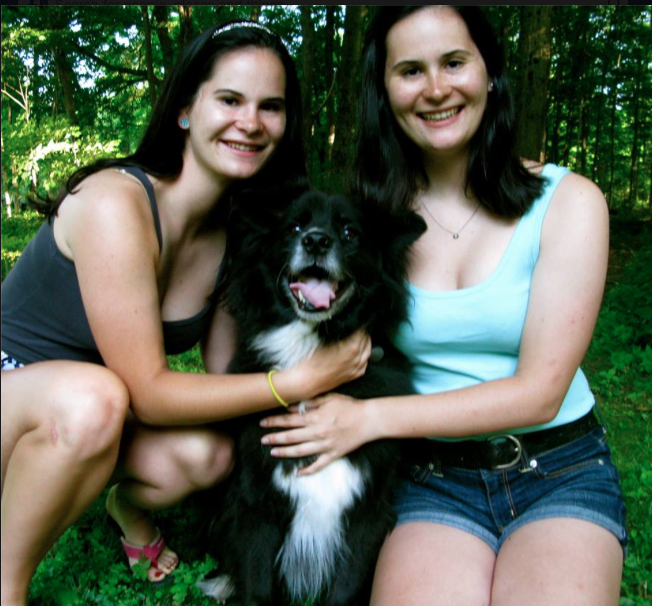
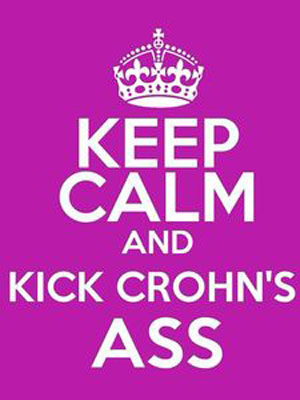
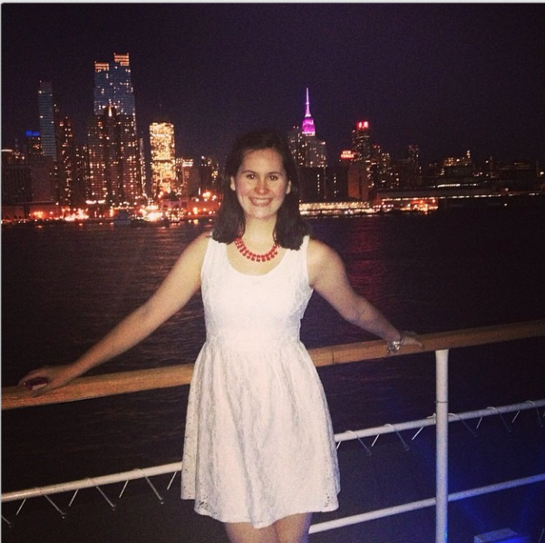

|
About Me
My name is Madeleine Schwartz and I am a Junior at Manhattan College. I have a major in Communications with a concentration in Public Relations and a minor in marketing. It sounds like a lot and definitely requires work, but it all goes together nicely and hopefully will get me a job when I graduate. I'm three years in, so there is no turning back now!
I am originally from East Haddam, Connecticut, a very rural town in the Southern part of the state. All you can see is trees and sky which is something that I have found myself missing once I got to the big apple. I live with my amazing parents and twin sister while I'm home for the summer and breaks but fortunate enough for me, I am able to take my sister back to Manhattan with me. So yes, we are those quintessential twins that not only look alike, but have the same interests. We both have the same major, have a lot of the same friends, and like almost exactly same things. Three years ago we didn't plan on sticking together for school but, oddly enough, we liked the same schools and decided to go for it. So far, we have been roommates for two of the three years and have had multiple classes together. We haven't killed each other yet and so far, we haven't regretted it.

Although my twin sister and I are very similar, there is one thing that makes me "special". It all started four years ago in high school gym class when we were measuring our BMI's. It was going smoothly until we took our weights and I found out that I was 20 pounds lighter than my sister. This raised a red flag because, as the trend points to, we are extremely similar. This was in February and looking back now, I should have realized that something was wrong earlier. For the 4 months leading up to this incident in gym class, I had been constantly exhausted. I would frequently fall sound asleep on my 30 minute bus ride coming home from school and then proceed to take an hour nap after. I also never had an appetite. No matter what my parents fed me, I never felt hungry. Even if I hadn't ate for hours, it felt as if I was constantly full.
Once my parents got wind that my weight was off and put together the pieces that had been around for months, they set up an appointment with my pediatrician. I met with her who told me that I looked absolutely horrible. I was pale and looked as if I hadn't slept in days. She took some blood tests which confirmed that I had elevated levels of inflammation in my body. This meant that something, we didn't know exactly what at the time, was going on and that I needed to see a gastroenterologist. We made an appointment a week later and was told that she needed to do a endo-colonoscopy to confirm her thoughts. She has some suspicions, but one of them was that I had something called Crohn's disease; the results came back positive three days later.

Crohn's disease is a chronic, autoimmune disease that affects the intestinal track. It causes inflammation throughout the body by tricking the immune system to fight off the good cells as well as the bad ones. Every person's case is different and range in severity: luckily I had a mild case. Crohn's disease ranges from inactive and active states. This means that a person could see no symptoms for weeks or even years and suddenly one day see them again. The problem with this disease is that it is chronic; I'll always have it. Whether I like it or not, it has become a part of who I am.
Now, four years after my diagnosis, I do a lot to keep my disease under control and in a manageable, inactive state. Along with medication, I have adapted a gluten-free diet. I have found that medication is not enough to keep me healthy: going gluten-free was the piece that was missing. It is not easy; I'm a college girl who can't eat the famous New York pizza or visit Magnolia cupcakes but I make it work. It has become easier over time and I have had a lot of supportive people on my side.
I have chosen to create this website to be a guide for anyone else eating gluten-free and as a way to tell my story. I think it's a pretty interesting one, if I do say so myself. Enjoy!

|